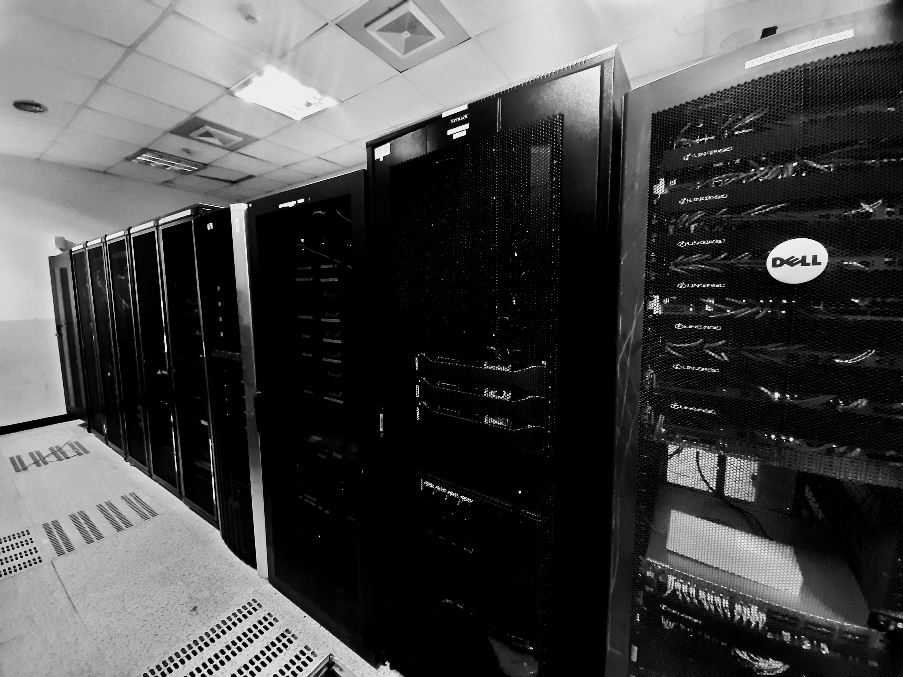

Project Overview
- Project: Dell Server – DR & Business Continuity
- Role: Systems & Infrastructure Engineer
- Industry: Enterprise / Data Center
- Focus: DR, BCP, Remote Management
- Vendors: Dell Technologies
Dell Server Infrastructure for Disaster Recovery & Business Continuity
In this project, I worked extensively with Dell PowerEdge servers to design, deploy, and manage a resilient server infrastructure that supports disaster recovery (DR) and business continuity (BCP). The implementation followed Dell vendor best practices to ensure high availability, reliability, and fast recovery during failures.
Key Responsibilities
- Deployment and management of Dell PowerEdge servers
- Enhancement of remote access infrastructure for disaster recovery
- Ensuring secure, fast, and reliable failover capabilities
- Collaboration with vendor engineers and data center teams
- Supporting business continuity planning and DR readiness
Monitoring & Remote Management
- System monitoring using NMS / FMS tools
- Hardware diagnostics and troubleshooting using:
- Dell iDRAC
- IPMI
- HPE iLO (cross-platform exposure)
- Firmware updates, health checks, and alert analysis
Technologies & Tools
Dell PowerEdge Servers, iDRAC, IPMI, iLO, NMS/FMS Monitoring Tools, Disaster Recovery Planning, Business Continuity Strategy
Impact & Results
This implementation significantly improved infrastructure reliability, reduced recovery time during incidents, and strengthened overall disaster recovery preparedness. The environment now supports secure remote operations and ensures uninterrupted availability of critical services.